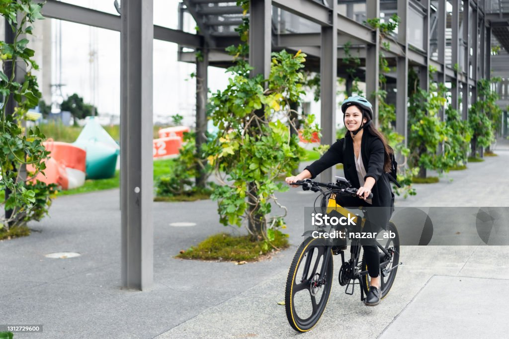

Sobre o Projeto "Pedal Urbano"
O Projeto Pedal Urbano é uma iniciativa dedicada a promover a mobilidade urbana sustentável. Ele visa integrar ciclovias seguras com rotas que conectem patrimônios culturais e naturais. O projeto também foca na inclusão social, segurança no trânsito e redução do impacto ambiental, incentivando o uso de bicicletas e bicicletas elétricas.
Objetivos do Projeto:
- Promover o uso de bicicletas como meio de transporte sustentável.
- Incentivar a mobilidade em áreas vulneráveis e melhorar a acessibilidade.
- Conectar ciclovias a pontos culturais e naturais da cidade.
- Reduzir o impacto ambiental, promovendo uma cidade mais verde e sustentável.
Bicicletas Elétricas
Bicicletas Elétricas: Uma Alternativa Sustentável
As bicicletas elétricas têm se destacado como uma solução inovadora e sustentável para a mobilidade urbana , e as rotas culturais de bicicleta proporcionam uma maneira única de explorá-la. Ao pedalar pelas ciclovias da cidade, os ciclistas têm a oportunidade de conhecer pontos turísticos, museus, parques e eventos culturais que enriquecem a experiência urbana.
As rotas são cuidadosamente planejadas para conectar ciclistas a locais emblemáticos, como o Museu de Artes da Pampulha, a Praça da Liberdade, e o Parque Municipal Américo Renné Giannetti. Além disso, são oferecidas paradas estratégicas em feiras de artesanato, eventos gastronômicos e espaços de arte ao ar livre, permitindo que os ciclistas não apenas desfrutem de um passeio, mas também se envolvam ativamente com a cultura local.
Essas rotas não só promovem a mobilidade sustentável, mas também incentivam a valorização do patrimônio cultural e natural da cidade, proporcionando uma nova perspectiva sobre a rica história e a diversidade de Belo Horizonte.


Campanhas Educativas
As campanhas educativas são fundamentais para promover a segurança no trânsito e conscientizar os ciclistas sobre as melhores práticas ao pedalar. Através de materiais didáticos, workshops e palestras, buscamos educar tanto ciclistas quanto motoristas sobre a importância do respeito mútuo nas vias urbanas.
Uma parte essencial dessas campanhas é a distribuição de dicas práticas, como a importância do uso de capacetes, a sinalização correta ao mudar de direção e o respeito às regras de trânsito. Também incentivamos a manutenção regular das bicicletas para garantir que estejam sempre seguras para o uso.
Além disso, promovemos jogos e atividades interativas para engajar a comunidade, especialmente as crianças, tornando o aprendizado divertido e acessível. Nossas iniciativas visam não apenas reduzir acidentes, mas também criar um ambiente mais amigável e seguro para todos os usuários da estrada.
Quiz de Segurança no Trânsito
Teste seus conhecimentos sobre segurança no trânsito! Responda às perguntas abaixo:
Blog e Notícias
No último mês, Belo Horizonte sediou o seu primeiro grande evento de mobilidade urbana, com foco na sustentabilidade e segurança para ciclistas. O evento reuniu mais de 500 pessoas, incluindo ciclistas experientes e iniciantes, além de palestrantes que abordaram as melhores práticas para uma cidade mais sustentável.

Os Benefícios do Ciclismo para o Emagrecimento
Pedale e Emagreça!
Andar de bicicleta é uma das formas mais eficazes e agradáveis de se exercitar e, ao mesmo tempo, emagrecer. Ao pedalar, você não apenas queima calorias, mas também melhora sua saúde cardiovascular e fortalece seus músculos.
Como a Ciclismo Ajuda na Perda de Peso?
- Queima de Calorias: Uma hora de pedalada pode queimar entre 400 e 600 calorias, dependendo da intensidade e do seu peso corporal. Isso significa que, ao incluir a bicicleta na sua rotina, você pode atingir um déficit calórico necessário para emagrecer.
- Aumento do Metabolismo: O exercício regular, como o ciclismo, aumenta o metabolismo, o que ajuda a queimar calorias mesmo quando você não está se exercitando.
- Atividade de Baixo Impacto: Ao contrário de outras formas de exercício, a bicicleta é gentil com as articulações, tornando-a acessível para pessoas de todas as idades e níveis de condicionamento físico.
- Melhora da Saúde Mental: O ciclismo libera endorfinas, que são hormônios que melhoram o humor. Isso pode ajudar a reduzir a ansiedade e a depressão, fatores que muitas vezes contribuem para o ganho de peso.
Dica Prática:
Comece pedalando algumas vezes por semana e aumente a frequência gradualmente. Combine o ciclismo com uma dieta balanceada para melhores resultados!
Pedalando para um Novo Você
Transforme seu Corpo e sua Vida com a Ciclismo!
A bicicleta não é apenas um meio de transporte; é uma poderosa ferramenta para emagrecimento e bem-estar. Se você está buscando perder peso, aqui estão algumas razões para começar a pedalar:
- Consistência é a Chave: Ao integrar a bicicleta na sua rotina diária, você facilita a adesão a um estilo de vida ativo. Pedalar para o trabalho ou para a escola é uma excelente maneira de se exercitar sem precisar de um tempo extra.
- Variedade e Diversão: O ciclismo pode ser feito em diferentes ambientes — parques, ruas ou trilhas. Essa variedade mantém o exercício divertido e motivador.
- Defina Metas: Estabeleça pequenas metas, como aumentar a distância percorrida a cada semana. Isso não apenas melhora seu condicionamento físico, mas também te dá uma sensação de realização.
Conclusão:
Adotar a bicicleta como parte do seu dia a dia pode ser a mudança que você precisa para alcançar seus objetivos de emagrecimento. Comece hoje e pedale em direção a um corpo mais saudável!
O Impacto de Deixar o Carro e Andar de Bicicleta
Transforme sua Mobilidade e o Meio Ambiente!
Trocar o carro pela bicicleta é uma decisão que traz benefícios significativos, tanto para você quanto para o planeta. Ao optar por pedalar, você não apenas melhora sua saúde, mas também contribui para um futuro mais sustentável.
Benefícios da Ciclismo em Substituição ao Carro:
- Redução de Emissões: Os carros são grandes emissores de gases de efeito estufa. Ao optar pela bicicleta, você ajuda a diminuir a poluição do ar e a combater as mudanças climáticas.
- Menos Congestionamento: Com mais ciclistas nas ruas, o tráfego diminui, resultando em um transporte mais eficiente e menos estresse no trânsito.
- Economia Financeira: Manter um carro pode ser caro. Ao usar a bicicleta, você economiza em combustível, estacionamento e manutenção.
- Saúde e Bem-Estar: Andar de bicicleta é um excelente exercício que ajuda a manter o peso, fortalecer o coração e melhorar a saúde mental.
Junte-se a Essa Mudança!
Fazer a transição do carro para a bicicleta pode parecer desafiador, mas cada pequeno passo conta. Comece pedalando para o trabalho ou escola uma vez por semana e sinta a diferença!
Conclusão:
Ao deixar o carro e optar pela bicicleta, você se torna parte de uma solução maior, contribuindo para cidades mais limpas, saudáveis e sustentáveis. Vamos pedalar juntos por um futuro melhor!

Rotas Culturais
Belo Horizonte é uma cidade rica em cultura e história, e as rotas culturais de bicicleta proporcionam uma maneira única de explorá-la. Ao pedalar pelas ciclovias da cidade, os ciclistas têm a oportunidade de conhecer pontos turísticos, museus, parques e eventos culturais que enriquecem a experiência urbana.
As rotas são cuidadosamente planejadas para conectar ciclistas a locais emblemáticos, como o Museu de Artes da Pampulha, a Praça da Liberdade, e o Parque Municipal Américo Renné Giannetti. Além disso, são oferecidas paradas estratégicas em feiras de artesanato, eventos gastronômicos e espaços de arte ao ar livre, permitindo que os ciclistas não apenas desfrutem de um passeio, mas também se envolvam ativamente com a cultura local.
Essas rotas não só promovem a mobilidade sustentável, mas também incentivam a valorização do patrimônio cultural e natural da cidade, proporcionando uma nova perspectiva sobre a rica história e a diversidade de Belo Horizonte.